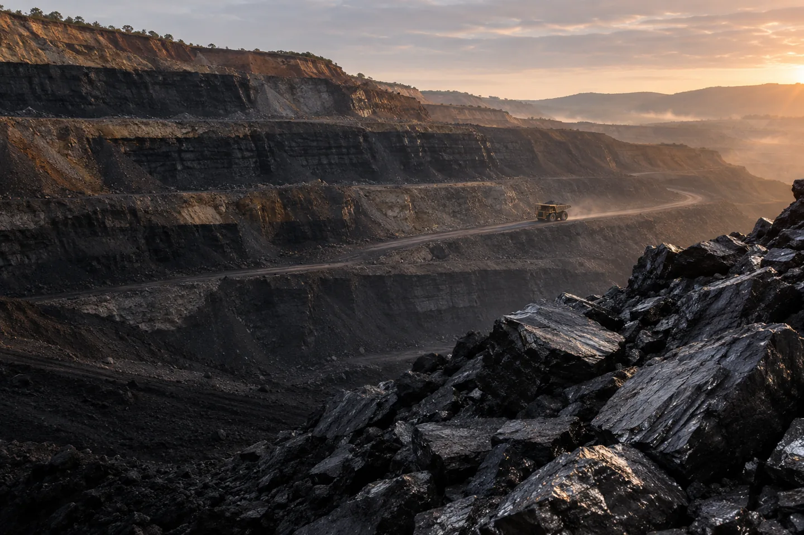
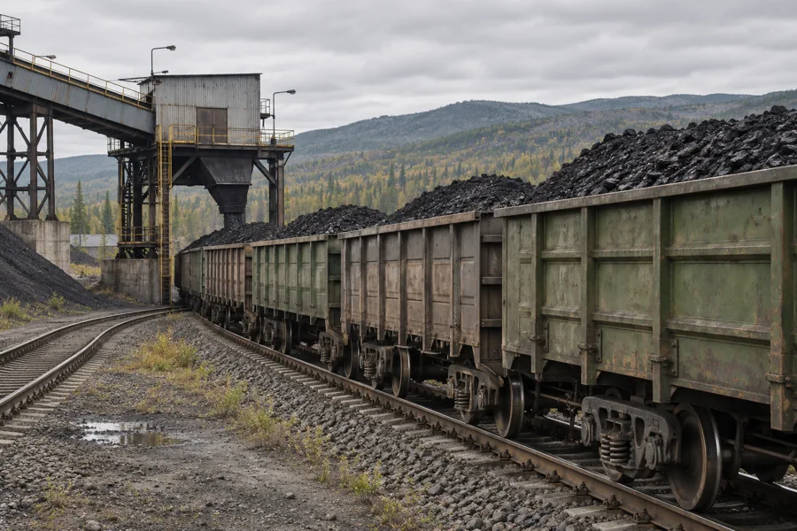

Угольная промышленность
Уголь всех марок, включая антрацит, с месторождений, разрезов и шахт разных регионов. Доставляем партии любого объёма по Сибири, Кузбассу, Уралу, Дальнему Востоку, в том числе и Якутии.
Марки угля
Бурый и каменный уголь, антрацит. Обозначения марок приведены по ГОСТ 25543-2013.
ДР и фракция «орех»
ДР — длиннопламенный рядовой уголь.
«Орех» (О) — класс крупности с размером кусков 25–50 мм.
Бурый уголь и антрацит
Бурый уголь применяют в энергетике. Антрацит используют как топливо и в промышленных процессах, где важен низкий выход летучих веществ.
| Марка | Наименование | Применение |
|---|---|---|
| Б | Бурый | Для энергетики и котельного оборудования, рассчитанного на бурый уголь. |
| А | Антрацит | Уголь с низким выходом летучих веществ. Применяется в энергетике и отдельных металлургических процессах. |
Другие марки каменного угля
Марку для котельной или промышленной установки подбирают по требованиям оборудования.
| Марка | Наименование | Применение |
|---|---|---|
| Д | Длиннопламенный | Распространённое топливо для котельных и энергетических установок. |
| ДГ | Длиннопламенный газовый | Используется как топливо. Отдельные подгруппы применяются в коксовых шихтах. |
| Г | Газовый | Применяется в энергетике и коксовании. Назначение зависит от группы и свойств партии. |
| СС | Слабоспекающийся | Применяется в энергетике и отдельных технологических процессах. |
| Т | Тощий | Каменный уголь с низким выходом летучих веществ. Применяется в энергетике и промышленности. |
Марки для коксования
Состав коксовой шихты подбирают с учётом спекаемости и параметров каждой партии.
| Марка | Наименование | Применение |
|---|---|---|
| ГЖО | Газовый жирный отощенный | Компонент коксовой шихты с меньшей спекаемостью, чем у газового жирного. |
| ГЖ | Газовый жирный | Спекающийся компонент коксовой шихты с высоким выходом летучих веществ. |
| Ж | Жирный | Используется в коксовых шихтах благодаря высокой спекаемости. |
| КЖ | Коксовый жирный | Хорошо спекающийся компонент шихты для производства кокса. |
| К | Коксовый | Применяется в шихтах для производства металлургического кокса. |
| КО | Коксовый отощенный | Компонент коксовых шихт с меньшей спекаемостью, чем у коксового угля. |
| КСН | Коксовый слабоспекающийся низкометаморфизованный | Используется как компонент шихты с учётом требований к коксу. |
| КС | Коксовый слабоспекающийся | Используется в коксовых шихтах как слабоспекающийся компонент. |
| ОС | Отощенный спекающийся | Компонент коксовой шихты с низким выходом летучих веществ. |
| ТС | Тощий спекающийся | Применяется в отдельных составах коксовых шихт. Пригодность зависит от подгруппы и свойств партии. |
Отгрузка и доставка
Уголь отгружаем с месторождений, разрезов и шахт разных регионов. Место отгрузки подбираем по марке, фракции и требованиям к качеству партии.
- Сибирь
- Кузбасс
- Урал
- Дальний Восток
- Якутия
Доставляем партии любого объёма. Маршрут и график поставки согласуем по тоннажу, пункту назначения и срокам.

Спецификация партии
Марка и фракция
Укажите назначение угля и требуемый размер кусков в миллиметрах.
Качество партии
Согласуем теплоту сгорания, зольность, влажность и содержание серы по требованиям заказчика.
Объём и доставка
Укажите тоннаж, пункт назначения и желаемый срок. Оформляем разовые поставки и поставки по графику.